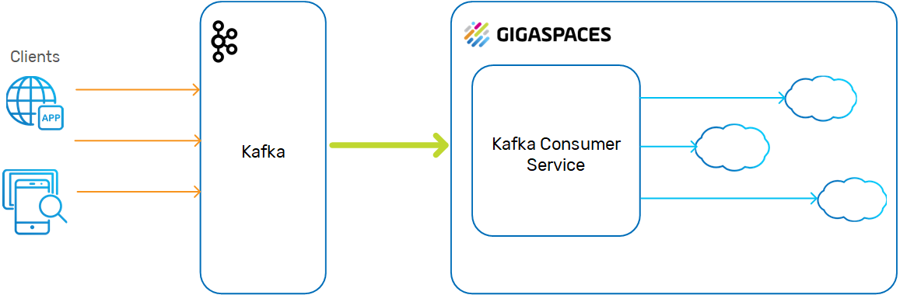
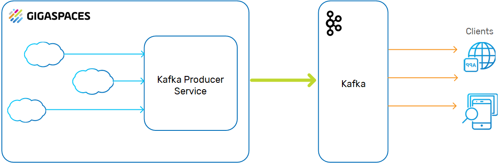
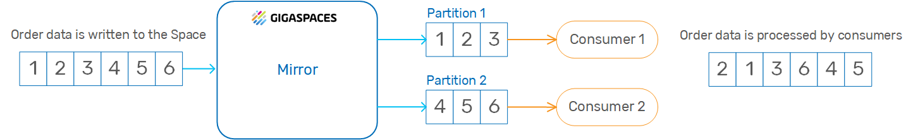

This topic describes how to implement the
Apache Kafka is a distributed publish-subscribe messaging system, which supports sending messages between applications, processes, and servers. A message is any kind of information that is sent from a producer (application that sends the messages) to a consumer (application that receives the messages).
Producers write their messages, or data, to Kafka topics. These topics are divided into partitions that function like logs. Each message is written to a partition and has a unique offset, or identifier. Consumers can specify a particular offset point where they can begin to read messages.
A Kafka server is called a broker, and a Kafka cluster contains one or more brokers. Topic partitions can reside on different brokers in the clusters, so that data in a specific topic can be split among multiple brokers. Consumers can be associated with consumer groups (each group reads from a specific topic). This enables high throughput because messages can be written and read in parallel to and from the different brokers in the cluster.
Kafka is designed to support persistent messaging with a O(1) disk structure that provides constant time performance, even with multiple terabytes of stored messages. Kafka provides high throughput even with very modest hardware, supporting hundreds of thousands of messages per second. Messages can be split among Kafka brokers, distributing consumption over a cluster of consumer machines while maintaining per-partition ordering semantics. For example, Kafka is often used to perform parallel data loading to Hadoop.
The Kafka persistence library provides a wrapper around the native Kafka Consumer API for the com.epam.openspaces.persistency.kafka.consumer.KafkaConsumer example in the
The Space sits behind the Kafka consumer service, and the data objects are passed to the Space instances using routing keys.

The SpaceSynchronizationEndpoint interface deployed as a Kafka producer service. The service consumes a batch of data grid operations, converts them into custom Kafka messages, and sends these to the Kafka broker using the Kafka Producer API.

The SpaceDocument with key/value pairs.
Kafka messages are sent via the network, so must be serialized into bytes.
The default encoder utilizes the Java serialization mechanism, which implies Space classes (domain model) to be Serializable.
By default, Kafka messages are uniformly distributed across Kafka partitions. As such, even though data grid operations appear ordered in SpaceSynchronizationEndpoint, this doesn't imply the correct data processing ordering in Kafka consumers.

This topic includes an example of
Implementing
You need to install Kafka before installing the
The
To download and install the
Download the connector from Github.
Unzip the connector package into an empty folder. The connector is located under <project_root>/example/.
To start Zookeeper and the Kafka server, type the following commands:
bin/zookeeper-server-start.sh config/zookeeper.properties
bin/kafka-server-start.sh config/server.propertiesTo build the project, type the following command:
cd <project_root>/example/dev-scripts
./rebuild.shTo deploy the connector, type the following command:
cd <project_root>/example/dev-scripts
./deploy.shAfter you download and install the connector, you can configure the pu.xml with any necessary properties, such as
Kafka persistence is essentially an implementation of the SpaceSynchronizationEndpoint. It takes a batch of data sync operations, converts them to a custom message protocol and sends them to the Kafka server using the Kafka Producer API.
The following Maven dependency must be included in your project in order to use Kafka persistence. This artifact is built from the <project_rootd>/kafka-persistence source directory.
<dependency>
<groupId>com.epam</groupId>
<artifactId>kafka-persistence</artifactId>
<version>1.0-SNAPSHOT</version>
</dependency>
You can configure the kafkaSpaceSynchronizationEndpoint as shown in the following example code, located under <project_root>/example/mirror/src/main/resources/META-INF/spring.where it is implemented as a
<?xml version="1.0" encoding="UTF-8"?>
<beans xmlns="http://www.springframework.org/schema/beans"
xmlns:xsi="http://www.w3.org/2001/XMLSchema-instance"
xmlns:os-core="http://www.openspaces.org/schema/core"
xmlns:os-events="http://www.openspaces.org/schema/events"
xmlns:os-remoting="http://www.openspaces.org/schema/remoting"
xmlns:os-sla="http://www.openspaces.org/schema/sla"
xsi:schemaLocation="http://www.springframework.org/schema/beans http://www.springframework.org/schema/beans/spring-beans.xsd
http://www.openspaces.org/schema/core http://www.openspaces.org/schema/9.1/core/openspaces-core.xsd
http://www.openspaces.org/schema/events http://www.openspaces.org/schema/9.1/events/openspaces-events.xsd
http://www.openspaces.org/schema/remoting http://www.openspaces.org/schema/9.1/remoting/openspaces-remoting.xsd
http://www.openspaces.org/schema/sla http://www.openspaces.org/schema/sla/9.1/openspaces-sla.xsd">
<bean id="propertiesConfigurer" class="org.springframework.beans.factory.config.PropertyPlaceholderConfigurer">
<property name="locations">
<list>
<value>classpath:kafka.properties</value>
</list>
</property>
</bean>
<bean id="kafkaSpaceSynchronizationEndpoint" class="com.epam.openspaces.persistency.kafka.KafkaSpaceSynchronizationEndpointFactoryBean">
<property name="producerProperties">
<props>
<!-- Kafka producer properties. Consult Kafka documentation for a list of available properties -->
<prop key="metadata.broker.list">${metadata.broker.list}</prop>
<prop key="request.required.acks">${request.required.acks}</prop>
</props>
</property>
</bean>
<!--
The mirror space. Uses the Kafka external data source. Persists changes done on the Space that
connects to this mirror space into the Kafka.
-->
<os-core:mirror id="mirror" url="/./mirror-service" space-sync-endpoint="kafkaSpaceSynchronizationEndpoint" operation-grouping="group-by-replication-bulk">
<os-core:source-space name="space" partitions="2" backups="1"/>
</os-core:mirror>
</beans>
The number of backups per partition is zero or one.
For more information about the
You can configure the Kafka processor service as shown in the following sample code, located under <project root>/example/processor/src/main/resources/META-INF/spring:
<?xml version="1.0" encoding="UTF-8"?>
<beans xmlns="http://www.springframework.org/schema/beans"
xmlns:xsi="http://www.w3.org/2001/XMLSchema-instance"
xmlns:os-core="http://www.openspaces.org/schema/core"
xsi:schemaLocation="http://www.springframework.org/schema/beans http://www.springframework.org/schema/beans/spring-beans.xsd
http://www.openspaces.org/schema/core http://www.openspaces.org/schema/9.1/core/openspaces-core.xsd">
<!--
Spring property configurer which allows us to use system properties (such as user.name).
-->
<bean id="propertiesConfigurer" class="org.springframework.beans.factory.config.PropertyPlaceholderConfigurer"/>
<!--
Enables the usage of @GigaSpaceContext annotation based injection.
-->
<os-core:giga-space-context/>
<!--
A bean representing a space (an IJSpace implementation).
-->
<os-core:space id="space" url="/./space" schema="default" mirror="true">
<os-core:space-type type-name="Product">
<os-core:id property="CatalogNumber"/>
<os-core:basic-index path="Name"/>
<os-core:extended-index path="Price"/>
</os-core:space-type>
</os-core:space>
<!--
OpenSpaces simplified space API built on top of IJSpace/JavaSpace.
-->
<os-core:giga-space id="gigaSpace" space="space" />
</beans>
The following properties are the default applied to the Kafka producer in the
| Property | Default Value | Description |
|---|---|---|
| key.serializer.class | com.epam.openspaces.persistency.kafka. protocol.impl.serializer.KafkaMessageKeyEncoder |
Message key serializer of the default Gigaspace-Kafka protocol. |
| serializer.class | com.epam.openspaces.persistency.kafka. protocol.impl.serializer.KafkaMessageEncoder |
Message serializer of the default Gigaspace-Kafka protocol. |
For a full list of available producer properties, see the Kafka Producer Configurations page in the Confluent documentation.
You can configure the Kafka consumer service as shown in the following sample code, located under <project root>/example/consumer/src/main/resources/META-INF/spring:
<?xml version="1.0" encoding="UTF-8"?>
<beans xmlns="http://www.springframework.org/schema/beans"
xmlns:xsi="http://www.w3.org/2001/XMLSchema-instance"
xmlns:context="http://www.springframework.org/schema/context"
xsi:schemaLocation="http://www.springframework.org/schema/beans http://www.springframework.org/schema/beans/spring-beans.xsd
http://www.openspaces.org/schema/core http://www.openspaces.org/schema/core/openspaces-core.xsd">
<bean class="org.springframework.beans.factory.config.PropertyPlaceholderConfigurer">
<property name="locations">
<list>
<value>classpath:kafka.properties</value>
</list>
</property>
</bean>
<!-- Kafka Consumer, wrapper around native Kafka producer API -->
<bean id="kafkaConsumer" class="com.epam.openspaces.persistency.kafka.consumer.KafkaConsumerFactoryBean">
<property name="consumerProperties">
<props>
<!-- Kafka consumer properties. Consult Kafka documentation for a list of available properties -->
<prop key="zookeeper.connect">${zookeeper.connect}</prop>
<prop key="group.id">${group.id}</prop>
<prop key="zookeeper.session.timeout.ms">${zookeeper.session.timeout.ms}</prop>
<prop key="zookeeper.sync.time.ms">${zookeeper.sync.time.ms}</prop>
<prop key="auto.commit.interval.ms">${auto.commit.interval.ms}</prop>
</props>
</property>
</bean>
<!-- Consumer which implements business logic, consumes data from Kafka and saves to database using Hibernate -->
<bean id="consumer" class="com.epam.consumer.Consumer">
<property name="consumer" ref="kafkaConsumer" />
</bean>
</beans>In order to associate a Kafka topic with the domain model class, the class must be annotated with the @KafkaTopic annotation and declared as Serializable. See the following sample code.
@KafkaTopic("user_activity")
@SpaceClass
public class UserActivity implements Serializable {
...
}
To configure a Kafka topic for a SpaceDocument or Extended SpaceDocument, the KafkaPersistenceConstants.SPACE_DOCUMENT_KAFKA_TOPIC_PROPERTY_NAME property should be added to the document. See the following sample code.
public class Product extends SpaceDocument {
public Product() {
super("Product");
super.setProperty(SPACE_DOCUMENT_KAFKA_TOPIC_PROPERTY_NAME, "product");
}
You can also configure the name of the property that defines the Kafka topic for SpaceDocuments. Set the spaceDocumentKafkaTopicName to the required value, as shown in the sample code below.
<bean id="kafkaSpaceSynchronizationEndpoint" class="com.epam.openspaces.persistency.kafka.KafkaSpaceSynchronizationEndpointFactoryBean">
...
<property name="spaceDocumentKafkaTopicName" value="topic_name" />
</bean>
You can customize the
AbstractKafkaMessage, AbstractKafkaMessageKey, and AbstractKafkaMessageFactory.AbstractKafkaSpaceSynchronizationEndpoint.KafkaMessageDecoder and KafkaMessageKeyDecoder.